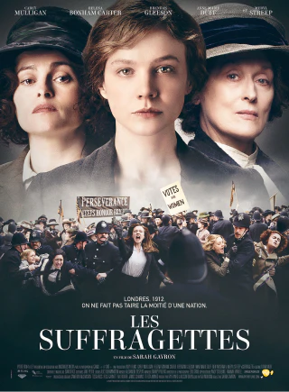

Suffragettes, to vote, whatever it takes
In 1893, New Zealand passed universal vote and let women vote during legislative elections. This important event marks the beginning of a new era for women rights.

Suffragettes campaining for their ideas in the street
Movement birth
During this time of social change, many associations campaigning for women's right of vote were created. In the United Kingdom, some of these associations assemble in the National Union of Women’s Suffrage Societies (NUWSS) founded in 1897 and led by Milicent Fawcett.
The NUWSS peacefully campaign for the right to vote. They organize street meetings where they put their ideas forward trying to convince political representatives. These women are often criticised, most of the women were educated to stay discreet outside home.
Shocking rallying
In 1903, Emmeline Pankhurst, tired of the lack of results from NUWSS founded the WSPU, Women’s Social and Political Union. This Suffragist organization uses more violent and provoking methods to get the right to vote.
Deeds Not Words
This quote was the slogan of women quickly called Suffragettes. They start by claiming their ideas during events. However, they rapidly attack masculine supremacy symbols. Churches and golf courses reserved for men are fired. Many of them are arrested. In jail, they begin a hunger strike and must be fed by force.
Suffragette movement led to the arrest of more than one thousand women but gradually gained public opinion. Their most impacting action is the bomb attempt targeting the English Prime Minister in 1913. The same year, Emily Davis became the first martyr for the cause by throwing herself under a horse during a derby.
Outcome
In 1918, the WSPU stopped its activities and participated in the war effort. The movement started in the service of the government and women helped at the back of the front. Whereas the NUWSS continued its political actions. The women’s contribution and actions of the NUWSS create a favourable context for their ideas. Finally, February 6th 1918, the government adopted a law allowing women aged 30 and above to vote. 10 Years later, in 1928, vote conditions of women were equalized with those of men.
Movement legacy
The Suffragette movement inspired many feminists in other countries. For example, in France, several feminists call themselves Suffragettes. They created a lot of associations and newspapers. Many of them, like Hubertine Auclert stand illegally in elections, organize protest marches. In 1914, they even organized a referendum in which more than 500 000 women would declare wanting to vote. The right to vote for women was given in 1944.
Suffragette movie poster
In 2015, Sarah Gavron made the movie “Suffragette”. This historical movie was relatively well received by critics. It constitutes a good base to discover the Suffragettes and important actions and events of this era.
Read also : Gisèle Halimi, feminist since birth